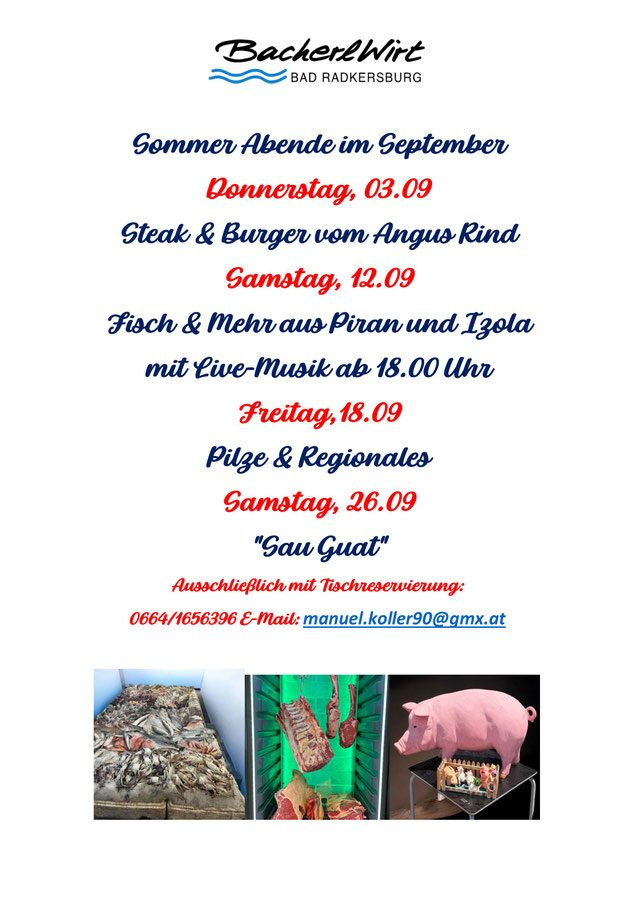

27 Tage
Unsere Dry-Aged-Steaks reifen im hauseigenen Reifeschrank mindestens 27 Tage lang.
Start › Über uns
Über unsWer hier kocht, warum der Reifeschrank im Haus steht und was sonst noch zum Bacherlwirt gehört.
„Manuel Koller – Koch aus Leidenschaft und Überzeugung. Die Kochkunst erlernte ich im 4* Romantik Hotel in Bad Radkersburg, welche ich danach als jahrelanger Küchenleiter immer weiter verfeinerte.“
Der Bacherlwirt ist ein hervorragender Ort, um abzuschalten und zu genießen. Unsere frischen, regionalen Zutaten sind die beste Grundlage, um Ihnen exzellente, traditionelle Speisen zu servieren. Saisonale Spezialgerichte ergänzen harmonisch unser ganzjähriges Menü.
Chef Manuel Koller ist stets auf der Suche nach neuen Herausforderungen – wie beim „Steirischen Reh Prosciutto“, für den die ganze Hinterkeule eines Rehs vier Monate lang reift.

Unsere Dry-Aged-Steaks reifen im hauseigenen Reifeschrank mindestens 27 Tage lang.
Vulkanland-Schwein, Eier, Erdäpfel, Kernöl und Wild kommen von benannten Betrieben aus der Umgebung.
Schinken, Wurst, Salze, Pestos, Chutneys und Hausbier entstehen im eigenen Haus.
Gault&Millau-Eintrag, Mitglied im Steirischen Wirtshaus und AMA Genuss Region Siegel.
Neben der Wochenkarte gibt es immer wieder Themenabende. Zwei Beispiele aus dem Archiv des Hauses – aktuelle Termine kündigen wir auf Facebook an.
Donnerstag, 03.09.: Steak & Burger vom Angus Rind · Samstag, 12.09.: Fisch & Mehr aus Piran und Izola mit Live-Musik ab 18:00 Uhr · Freitag, 18.09.: Pilze & Regionales · Samstag, 26.09.: „Sau Guat“. Ausschließlich mit Tischreservierung.

Jeden Freitag im August ab 17:30 Uhr: All-you-can-eat-Buffet um € 33,–. Pinsa, Muscheln, Prosciutto, Osso Buco, Risotto, Spaghetti Meeresfrüchte, Tiramisu und vieles mehr. Tischreservierung erbeten.
Wir freuen uns über Initiativbewerbungen für Küche und Service. Schreiben Sie uns kurz, was Sie können und wann Sie Zeit hätten – den Rest besprechen wir persönlich.
Direkt: 0043 664 16 56 396 · manuel.koller90@gmx.at